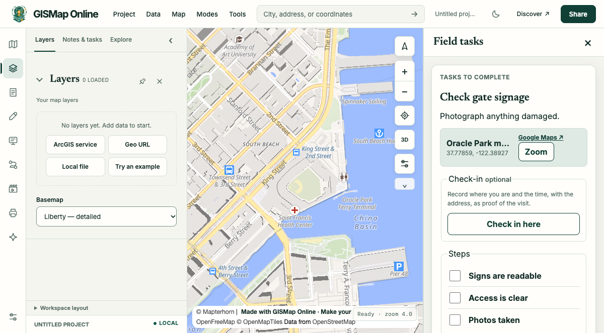

AI prompt example
A field task
Send a colleague to check the signs at Oracle Park's main gate.

Prompt
Send a colleague to check the signs at Oracle Park's main gate.
Link
https://gismap.online/?workflow=tasks#fieldTask=json:%7B%22title%22%3A%22Check%20gate%20signage%22%2C%22location%22%3A%22Oracle%20Park%20main%20gate%22%2C%22lat%22%3A37.77859%2C%22lon%22%3A-122.38927%2C%22notes%22%3A%22Photograph%20anything%20damaged.%22%2C%22steps%22%3A%5B%22Signs%20are%20readable%22%2C%22Access%20is%20clear%22%2C%22Photos%20taken%22%5D%7DWhat the agent says
The coordinates came from my own knowledge, and the task is only done when your colleague sends the report back.
Status reached
loaded, checked 2026-11-01 in headless Chrome. Live services change, and intended features, filter and reopening were not separately verified.